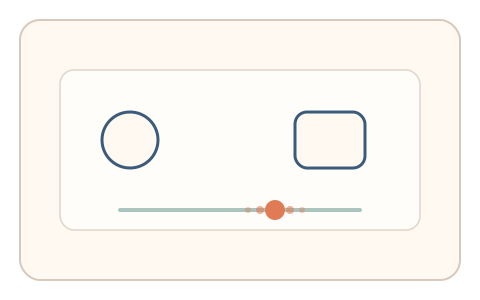
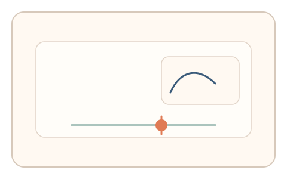

#70
视觉思考范式：文字与符号
已扩展
字形歧义滑杆
在两种相近字形的连续形变中寻找“更像哪一个”的临界点，以相似度阈值与微调轨迹验证真实性。
概念原文
显示介于两种字形之间的变形图（如 O/0、l/1），让用户拖动滑杆到“更像某个字符”的临界点。系统记录临界位置与来回微调路径。
依赖人类对字形相似度的连续感知阈值，而非识别正确率。
研究背景
人类在识别相似字形时存在连续感知与犹豫区间，临界点位置与微调路径具有稳定的个体与群体分布。通过记录滑杆调整过程，可提取区别于脚本的微行为信号。
核心机制
- 展示两种字形之间的连续形变图，提供滑杆控制。
- 用户拖动滑杆到“更像字符 A/B”的临界点。
- 采集临界位置、往返微调与停顿时间。
- 多轮随机字形对与字体以形成稳定区间。
用户流程
- 步骤 1：用户看到字形形变图与滑杆。
- 步骤 2：用户拖动到主观临界点并微调确认。
- 步骤 3：系统记录阈值与轨迹并判定。
判定信号
临界位置分布
人类相似度阈值集中在可预测区间。
微调往返与停顿节奏
真实判断通常伴随短暂停顿与回撤。
判定逻辑
阈值需落在人类分布区间，且微调节奏具有人类特征；一次到位或过度随机判异常。
对抗面
- 脚本计算形变参数直接定位临界点
- 重放真实用户的滑杆轨迹
防御与缓解
- 随机化字形对、字体与细节扰动
- 引入微小动态噪声降低参数直接映射
- 叠加滑动速度与停顿信号进行多信号判定
可达性与风险
支持高对比与大字号模式，允许键盘微调，并提供替代任务避免对阅读障碍用户造成阻碍。
- 阅读障碍或低视力用户阈值偏移
- 不同渲染引擎导致字形差异
可视化状态

状态 1：字形形变
两种相近字形之间的连续形变。

状态 2：滑杆微调
用户拖动滑杆并往返微调临界点。

状态 3：阈值判定
对比阈值与微调节奏形成判定。
参考资料
Visual word recognition
说明字形识别与视觉辨别机制。
Glyph
说明字形的视觉表征与变化。